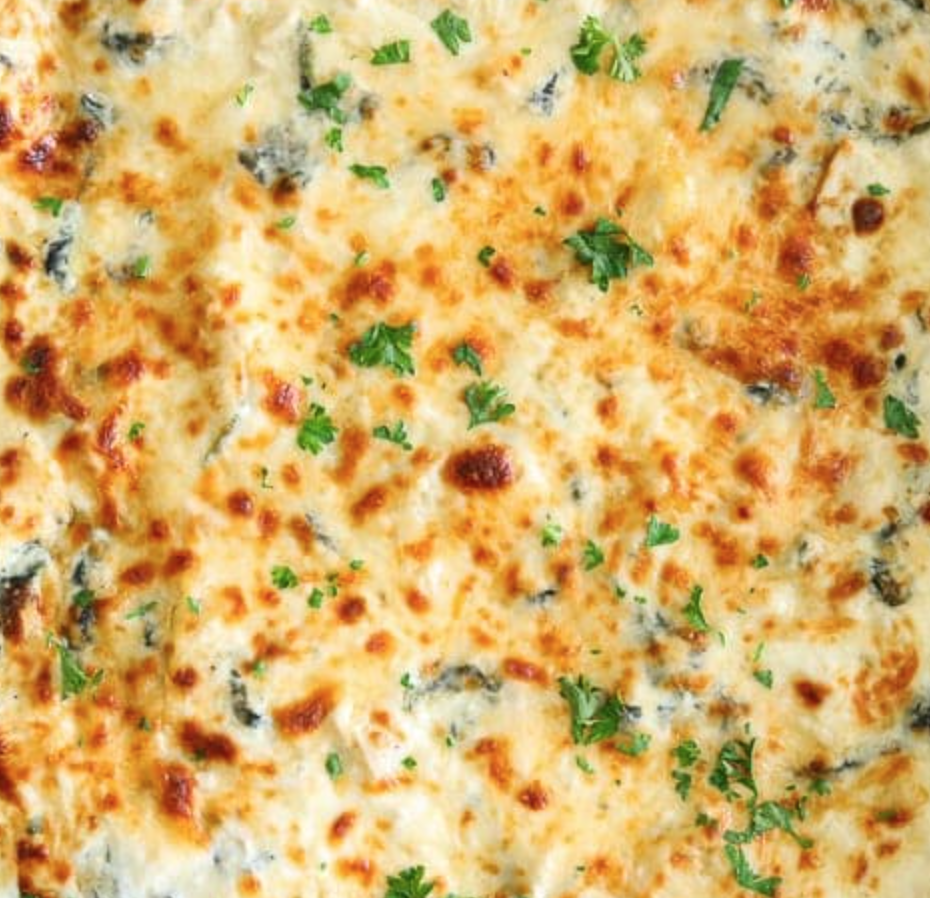

Chicken Alfredo Lasagna

With Rotisserie Chicken and Spinach.
The taste will make up the cooking time.
Ingredients
- 2 teaspoons butter
- 2 garlic cloves, minced
- 1 medium sized onion, chopped
- 300 grams fresh baby spinach
- 9 dl heavy cream
- 3,5 dl parmesan cheese
- 4 dl ricotta cheese
- 1 teaspoon black pepper
- 1 1/2 teaspoons salt
- 7 dl shredded rotisserie chicken
- 15 cooked lasagna plates
- 7 dl shredded mozzarella cheese
Steps
- Heat up a large skillet to medium-high. Add butter and minced garlic cloves along with chopped onion. Cook until onion becomes translucent.
- Add spinach and stir until it wilts.
- Add heavy cream, parmesan, ricotta, black pepper, salt and rotisserie chicken.
- Simmer up and remove from the heat.
- Pick up a large casserole dish. Cover the bottom with a large spoonful of the chicken Alfredo mixture. Followed by lasagna plates. About 5 plates does the trick.
- Place up another layer of chicken Alfredo mixture on top of lasagna plates. One-third of the mozzarella cheese on top.
- Repeat previous step until all 15 lasagna plates are used. Cover the casserole with foil and bake at 180 degrees for 35-40 minutes. Bake uncovered for another 2-3 minutes to brown the cheese. Enjoy!